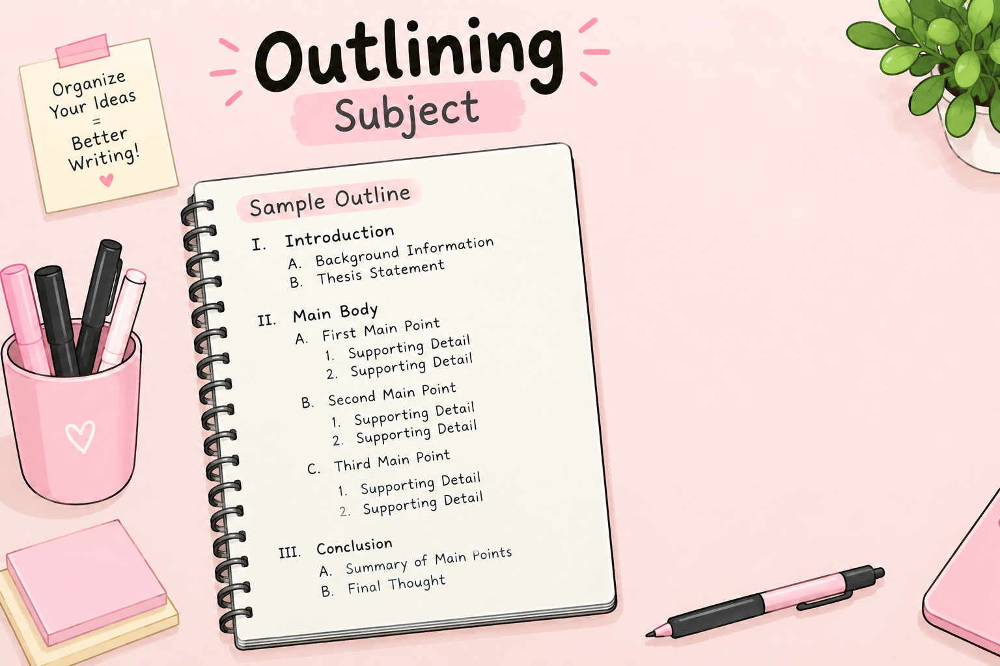

THE BIG IDEA
What Is Outlining the Subject?
Outlining the subject means narrowing down a broad topic and organizing ideas before writing the full document. It helps writers focus on the most important information, avoid unnecessary details, and present ideas in a logical order.

1. Limiting and Outlining the Subject
Limiting a subject means narrowing a broad topic to focus on a specific aspect. This makes the content concise, relevant, and manageable for the intended audience. It also prevents readers from being overwhelmed by unnecessary information.

Limiting the Subject
Narrow a general topic into a more specific and manageable subject.

Organizing Ideas
Group related ideas together so readers can understand the information more easily.

Creating an Outline
Arrange the main points and supporting details in a logical sequence.
Key Points in Limiting a Subject
- Identifying core topics: Determine the main subject you want to discuss.
- Setting boundaries: Decide which aspects of the topic will be included.
- Eliminating unnecessary information: Remove details that do not support the purpose.
- Focusing on essential elements: Give attention to the most important information.
- Maintaining relevance: Make sure every detail relates to the topic and audience.
Example of Limiting a Subject
Broad topic: Technology
More specific topic: Benefits of Technology in Education
Limited topic: How Online Learning Tools Help College Students Manage Their Studies
The last topic is more focused because it identifies the technology, the intended audience, and the specific issue to be discussed.
2. What Is an Outline?
An outline is a formal system used to think about and organize a paper. It uses Roman numerals, Arabic numerals, and capital or lowercase letters to show the order of topics, their relative importance, and the relationship between different parts of a document.
A good outline helps the writer:
- Arrange ideas before writing.
- Keep the discussion focused on the main topic.
- Show the relationship between main ideas and supporting details.
- Make the document easier to understand and follow.
- Identify missing information and repeated ideas.
3. Standard Outline Format
A standard outline uses different numbers and letters to indicate the level of each idea. Main ideas appear at the highest level, while supporting details are placed underneath them.
I. Main Heading
A. Subheading
1. Supporting detail
a. Example or explanation
(1) Additional detail
(a) More specific information
B. Another Subheading
II. Second Main Heading
A. Supporting idea
B. Supporting idea
Standard Outline Hierarchy
- Roman numerals: I, II, III
- Capital letters: A, B, C
- Arabic numbers: 1, 2, 3
- Lowercase letters: a, b, c
- Parenthetical Arabic numbers: (1), (2), (3)
- Parenthetical lowercase letters: (a), (b), (c)
4. Decimal Outline Format
A decimal outline uses numbers separated by periods to show the relationship between main topics, subtopics, and supporting details. It is useful when organizing technical reports and other documents with several levels of information.
1.0 Main Heading
1.1 Subheading
1.1.1 Supporting detail or example
1.1.1.1 Subdetail
1.1.1.2 Subdetail
1.1.2 Supporting detail or example
1.2 Another subheading
2.0 Second Main Heading
5. Two Kinds of Outline

Topic Outline
A topic outline uses short phrases instead of complete sentences. It is useful when the writer wants flexibility in arranging ideas and exploring different points.
I. Benefits of Online Learning
A. Flexible schedule
B. Accessible learning materials

Sentence Outline
A sentence outline uses complete sentences for its main points and supporting ideas. It is normally used when the subject includes complex details that need clearer explanation.
I. Online learning allows students to study with a more flexible schedule.
A. Students can arrange their study time around other responsibilities.
| Topic Outline | Sentence Outline |
|---|---|
| Uses short phrases. | Uses complete sentences. |
| Allows flexibility when arranging ideas. | Explains ideas more completely. |
| Useful for planning and brainstorming. | Useful for complex topics and detailed discussions. |
6. Characteristics of a Good Outline
A good outline should have the following characteristics:
Unity
All ideas support the same main topic and purpose.
Coherence
Ideas follow a logical order and connect smoothly.
Balance
Main points have an appropriate amount of supporting information.
Consistency
Similar ideas use the same format and level of detail.
Clarity
Headings and subheadings are easy to understand.
7. How to Write an Outline

- Identify the main topic and purpose. Decide what you want to explain and why you are writing about it.
- Determine the main ideas. List the major points that support your topic.
- Arrange the ideas in order. Put the points in a sequence that readers can easily follow.
- Add supporting details. Include examples, facts, explanations, and other relevant information.
- Review and revise. Check for missing information, repeated ideas, and unrelated details.
8. Example of a Complete Topic Outline
Topic: Benefits of Online Learning
I. Flexibility A. Study schedules B. Learning from different locations II. Accessibility A. Digital learning materials B. Recorded lessons III. Challenges A. Internet connection B. Time management
This outline groups related ideas together. Each main heading has supporting points that explain the topic without moving away from the main discussion.
9. Common Mistakes to Avoid
- Choosing a topic that is too broad: Narrow the topic to make it manageable.
- Including unrelated details: Keep information connected to the main subject.
- Using a confusing order: Arrange ideas in a sequence that makes sense.
- Adding unsupported subheadings: Make sure each subheading contributes to its main point.
- Using inconsistent formatting: Follow the same outline structure throughout.
- Repeating ideas: Remove duplicate information to keep the outline concise.
10. Using an Outline in Technical Writing
In Technical Writing, an outline helps organize information in a way that is accurate, clear, and easy for readers to follow. It can be used when preparing reports, user manuals, project proposals, and instructional documents.

Technical Reports
Organize the introduction, findings, discussion, and conclusion.

User Manuals
Arrange instructions into steps that users can follow.

Project Proposals
Present the problem, objectives, proposed solution, and expected results.
Sample Outline for a Technical Report
I. Introduction II. Purpose of the System III. System Requirements IV. Procedures V. Results and Discussion VI. Conclusion and Recommendations
11. Quick Review Quiz
Test your understanding of limiting a subject and outlining.